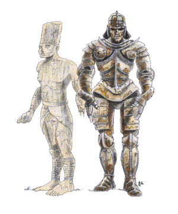

Golem, Greater

| Stone
| Iron
|
CLIMATE/TERRAIN:
| Any
| Any
|
FREQUENCY:
| Very rare
| Very rare
|
ORGANIZATION:
| Solitary
| Solitary
|
ACTIVITY CYCLE:
| Any
| Any
|
DIET:
| Nil
| Nil
|
INTELLIGENCE:
| Non- (0)
| Non- (0)
|
TREASURE:
| Nil
| Nil
|
ALIGNMENT:
| Neutral
| Neutral
|
NO. APPEARING:
| 1
| 1
|
ARMOR CLASS:
| 5
| 3
|
MOVEMENT:
| 6
| 6
|
HIT DICE:
| 14 (60 hp)
| 18 (80 hp)
|
THAC0:
| 7
| 3
|
NO. OF ATTACKS:
| 1
| 1
|
DAMAGE/ATTACK:
| 3-24 (3d8)
| 4-40 (4d10)
|
SPECIAL ATTACKS:
| See below
| See below
|
SPECIAL DEFENSES:
| See below
| See below
|
MAGIC RESISTANCE:
| Nil
| Nil
|
SIZE:
| L (9½' tall)
| L (12' tall)
|
MORALE:
| Fearless (19-20)
| Fearless (19-20)
|
XP VALUE:
| 8,000
| 13,000
|
A greater golem is an artificial humanoid body which has been animated by an
elemental spirit but remains under the complete control of its creator.
Stone Golem
A stone golem is 9½ feet tall, and weighs around 2000 pounds. Its body is of
roughly chiseled stone, frequently stylized to suit its creator. For example it
might be carved to to look like it is wearing armor with a particular symbol on
the chest plate. Sometimes designs are worked into the stone of its limbs. The
head may be chiseled to resemble a helmet or other head piece. Regardless of
these elements, it always has the basic humanoid parts (2 arms, 2 legs, head
with 2 eyes, nose, mouth etc.). It is always weaponless and never wears clothing.
Combat: Greater golems are mindless in combat, only following the simple tactics of
their masters. They are completely emotionless and cannot be swayed in any way
from their instructions. They will not pick up and use weapons in combat, even if
ordered to, always preferring their fists. Stone golems have a strength of 22,
for purposes of breaking or throwing things.
The stone golem is immune to any weapon, except those of +2 or better
enchantment. A rock to mud spell slows a golem for 2-12 (2d6) rounds. Its reverse, mud to rock acts to heal the golem, restoring all lost hit points. A flesh to stone spell does not actually change the golem's structure, but does make it
vulnerable to any normal attack for the following round. This does not include
spells, except those that will cause direct damage. All other spells are ignored.
Once every other round, the stone golem can cast a slow spell upon any opponent with 10 feet of it.
Habitat/Society: Golems are automatons, artificially created and under the direct control of
their creator. They have no society and are not associated with any particular
habitat. They are frequently used to guard valuable items or places. Unlike the
lesser golems, the greater golems are always under the complete control of their
master. A greater golem can obey simple instructions involving direct actions
with simple conditional phrases. Although this is better than a lesser golem is
capable of following, they still make poor servants. Any given task could take
several separate commands to direct the golem to its completion.
Ecology: Golems are not natural creatures, and play no part in the ecology of the
world. They neither eat nor sleep, and "live" until they are destroyed, usually in
combat. Certain spells (see above) can be used to heal or repair any damage done
to them in combat. This is usually done by their creators to insure long and
valuable service.
Iron Golem
An iron golem is twice the height of a normal man, and weighs around 5000
pounds. It can be fashioned in any stylized manner, just like the stone golems,
although it almost always is built displaying armor of some sort. Its features are
much smoother in contrast to the stone golem. Iron golems are sometimes found
with a short sword (relative to their size) in one hand. On extremely rare
occasions this sword will be magical.
The iron golem cannot speak or make any vocal noise,
nor does it have any distinguishable odor. It moves with a ponderously smooth
gait at half the speed of a normal man. Each step causes the floor to tremble,
unless it is on a thick, solid foundation.
Combat: The iron golem conforms to the strategies listed for the stone golem except as
described here. It has a strength of 24 for the purposes of lifting, throwing
or breaking objects. The iron golem is immune to any weapon, except those of +3
or better enchantment. Magical electrical attacks will slow it for 3 rounds, and magical fire attacks actually repair 1 hit point of
damage for each hit die of damage it would have caused. All other spells are
ignored. Iron golems are subject to the damage inflicted by a rust monster. Once
every 7 rounds, beginning either the first or second round of combat, the iron
golem breathes out a cloud of poisonous gas. It does this automatically, with no
regard to the effects it might have. The gas cloud fills a 10 foot cube directly
in front of it, which dissipates by the following round, assuming there is
somewhere for the gas to go.
(See also Wizard Spells and Priest Spells, Player’s Handbook)
Index